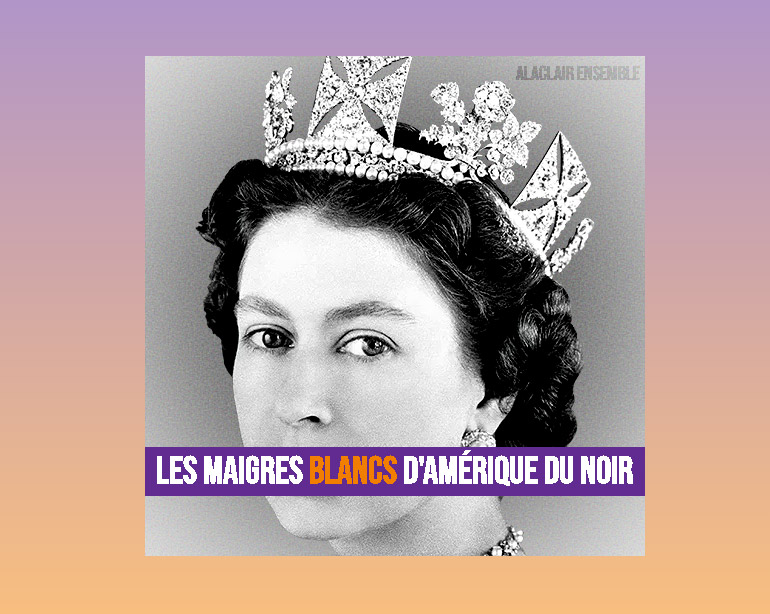

Pour cet exercice, vous devez écrire du HTML et du CSS afin de recréer l’album "Les maigres blancs d'Amérique du Noir" du groupe de rap québécois Alaclair Ensemble.
Aperçu du résultat 👇

Matériel
Dossier de départ
Fonts
Bebas Neue 400
Couleurs 🎨
#f17e00
#612b91
#7f7f7f
#ffffff
#000000
Médias
Bruit
Reine
Requis de base
Téléchargez les images et placez les dans un dossier images.
Créez une variable pour chacune des couleurs.
Le fond de la page doit être de couleur grise et avoir un dégradé vertical allant du mauve au jaune.
Fusionnez les deux fonds en mode screen afin de donner au gradient un effet délavé.
L'album doit avoir une dimension de 500x500px, être centré dans la page tant horizontalement que verticalement et être de couleur blanche.
Requis d'arrière-plan
À l'aide du pseudo-élément ::before, créez un cercle noir couvrant l'entièreté de l'album l'album (500x500px) et donnez lui un flou de 100px.
À ce stade-ci, le flou devrait déborder de l'album. Faites-en sorte de faire disparaître l'excédentaire.
Afin de créer un effet de grain, ajoutez un nouveau layer à l'aide du pseudo-élément ::after couvrant la totalité de l'album.
Appliquez à ce dernier l'image d'arrière-plan noise.svg et donnez lui un flou de 0.5px
Requis reine
À l'aide d'une balise img, ajoutez l'image de la reine à l'endroit indiqué dans le HTML.
L'image doit être centré horizontalement dans l'album et être par dessus les layers d'arrière-plan.
Donnez-lui une luminosité de 90% et un contraste de 130%.
Requis textes
Assurez-vous que les textes soient au premier-plan de l'album.
Importez la police d'écriture Bebas Neue à l'aide de la balise link et appliquez-la aux textes.
Le nom du groupe doit avoir une grosseur de police d'écriture de 20px, être situé à 5px du haut et 8px de la droite, avoir un mode de fusion overlay et être à demi transparent.
Le titre de l'album doit avoir une grosseur de police d'écriture de 38px, être blanc sur fond mauve, occuper tout l'espace horizontale et être à 60px du bas de l'album.
Assurez-vous que le mot blancs soit de couleur orange.
Ambiance
Notes de cours 📚